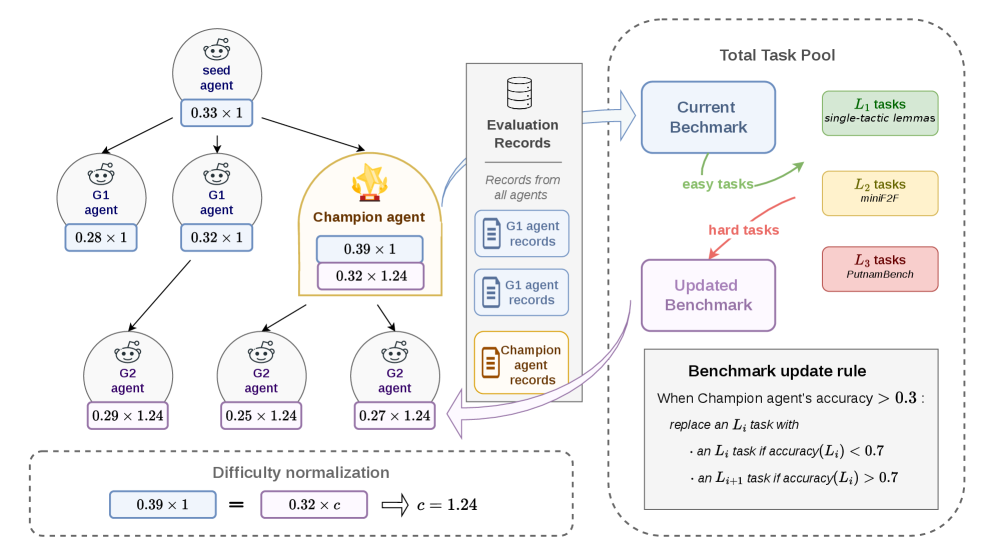
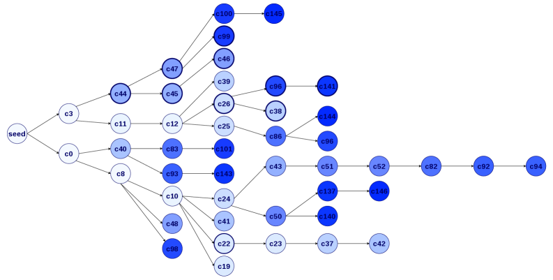

A self-evolving proof agent rewrites its workflow while a fixed Lean verifier grounds solve verdicts, evaluated on miniF2F and PutnamBench.
Abstract
Designing effective Lean proof agents is a central challenge in formal mathematical reasoning. Beyond building stronger provers, recent work emphasizes the workflow around Lean: how an agent decomposes proof obligations, uses tools and compiler feedback, diagnoses failures, repairs proofs, and maintains structured proof context. Motivated by code-level self-evolving agents, we study whether such workflows can be evolved rather than hand-designed. We present a self-evolving Lean proof agent in which a small fixed, trusted runtime wraps a fully mutable workspace: the proof workflow, prompts, and tools. Unlike most self-evolving systems, which optimize against a fixed external benchmark, our system coevolves the agent and its benchmark. Between generations, the highest-scoring agent (the champion) revises the active task distribution through a mastery-throttled curriculum update that introduces harder proof obligations only after the current level is mastered, and a single-anchor recalibration re-runs the champion on the updated benchmark to keep scores comparable as difficulty rises. All evolution stays inside a Lean-grounded verification loop: however the agent rewrites itself, a success counts only when its behavior yields Lean-verified proofs under a trusted snapshot, and each attempt must emit a machine-readable, Lean-grounded proof context whose representation may evolve but whose groundedness is enforced. We run the coevolving trajectory and a fixed-benchmark baseline for 15 active generations and compare them on a held-out miniF2F test split. The best coevolving agent reaches a 45.1% held-out solve rate, versus 12.7% for the seed and 32.0% for the best fixed-benchmark agent, showing that verifier-grounded self-evolution can improve Lean proof workflows under a coevolving benchmark.
Problem
Effective Lean proof agents rely on hand-designed workflows for decomposition, tool use, compiler feedback, and proof repair. The paper asks whether such workflows can be evolved automatically rather than manually engineered.
Approach
A small fixed, trusted runtime wraps a fully mutable workspace containing the proof workflow, prompts, and tools. Agents rewrite this workspace across generations, but a proof counts as solved only when re-verified under a trusted Lean snapshot. The system coevolves the agent with its benchmark: the champion updates a difficulty-stratified task distribution (single-tactic lemmas, miniF2F valid, PutnamBench) via mastery-throttled curriculum updates and single-anchor recalibration.

Figure 1: Champion-driven agent–benchmark coevolution. A seed agent produces first-generation ( G1 ) children that stream into a shared archive as they are evaluated, so a strong early child can already parent later siblings in the same generation; the strongest child becomes the champion , seeds the next generation ( G2 ), and also drives the benchmark update. Evaluation records from all agents a
Results
Over 15 generations, the best coevolving agent reaches 45.1% held-out miniF2F test solve rate, versus 12.7% for the seed and 32.0% for the best fixed-benchmark agent. The benchmark difficulty coefficient rose from 1.00 to 3.17, though performance remains below hand-designed provers.

Figure 2: Evolution tree for the accepted lineage. Bold nodes mark agents with decomposition-based workflows. Darker node colors indicate agents evolved in later generations.
Gen
0
2
10
13
15
Solve rate
12.7%
38.9%
25.4%
40.6%
45.1%
Agent
seed
c12
c86
c99
c144
Held-out miniF2F test solve rates for evaluated coevolving agents